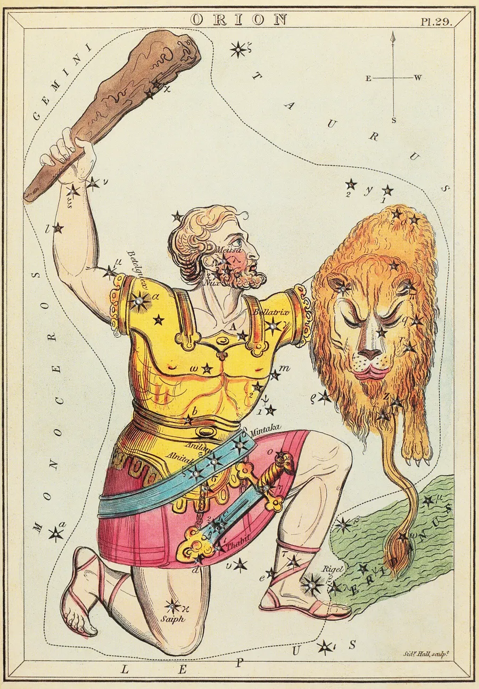

Orión
150 € la noche, dos personas con desayuno
La habitación grande del cortijo ocupa la antigua cámara del grano, con las vigas de castaño a la vista y una terraza propia que mira al sur. En invierno Orión entero cruza ese trozo de cielo entre las diez y las dos: se ve tumbado en la terraza, con manta, sin pisar la era.
Tiene estufa de leña, un sillón junto a la ventana y una mesa para dejar los mapas del cielo que prestamos en recepción.
Desde la cama
Por la claraboya, en las noches de enero, Sirio y la nebulosa de Orión; en verano, la cola del Escorpión asomando por encima de la sierra.
- Superficie
- 32 m² y terraza de 9 m²
- Cama
- 180 × 200 cm
- Baño
- ducha de obra y bañera
- Mira a
- sur, hacia la Pandera
- Extra
- estufa de leña y dos tumbonas